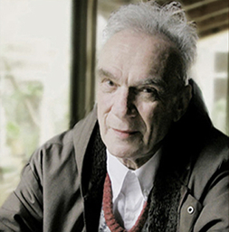

В эпоху, когда нация
еще не созрела
политически для принятия,
как сейчас выражаются,
судьбоносных решений,
она, видимо, инстинктивно
избирает человека,
связанного с ней
невидимыми духовными
нитями, но способного
командовать не только
«вперед», что нетрудно
и популярно, но и «назад»,
что в слепой толпе
связано с вечными
подозрениями
в «предательстве»,
что возможно лишь
для лидера, чье
господствующее
положение выглядит
неоспоримым даже
среди самых пылких
«патриотов».
НАЦИОНАЛЬНАЯ ОБЪЕДИНЕННАЯ ПАРТИЯ АРМЕНИИ
Однажды мы разговорились с Айрикяном о независимой Армянской республике, возникшей на территории бывшей Персидской (а потом Российской) Армении после 1917 года. Нас в институте учили, что турецкая армия во главе с Ататюрком едва не уничтожила тогда, в конце двадцатого года, молодое государство и почти добила остатки армянского народа, но Красная армия остановила Кемаля-пашу и спасла российских армян.
Паруйр вскипел, когда я все это пересказал:
- Мы разбили турецкую армию, когда создали свою республику, и снова бы их разбили, если бы с севера нас не атаковала Одиннадцатая армия красных. Нас взяли в клещи: с юга шли турки, с севера - большевики. Русские не спасли нас, а помогли Кемалю ликвидировать наше государство и получили за это часть наших земель, а остальное отдали туркам.
Неужели верно, что Ленин помог туркам? Скорее всего, Паруйр упрощает: Ленин вырвал у соперника добычу. И все-таки, почему так ничтожно мало рассказывали нам об армянском геноциде 1915 года и о том, как Армения снова вошла в состав России? Почему обо всем этом предпочитают молчать?
- Что ты знаешь про Нахичевань? - методично добивал меня Паруйр.
Каждый, кто взглянет на карту Советского Закавказья, не может не заметить странного расположения границ между тамошними республиками. На востоке территория Армении переходит в некую «трубу», зажатую с северного края основной территорией Азербайджана, а с южного фланга - Нахичеванской областью того же Азербайджана, отделенной от своей республики «армянским коридором». Таким образом, Нахичеванская область как бы взята в окружение Арменией и Ираном, охватившим ее с юга.
- Это была когда-то наша земля, - объяснил мне Айрикян. - Ее захватили турки. По мирному договору между Ленином и Кемалем турки отдали Нахичевань России, но с условием - не возвращать ее обратно армянам. Ленин передал эту землю Азербайджану. Я же тебе говорил, что они вдвоем Армению делили...
Все-таки я историк и поэтому доверяю не рассказам, пусть самым убедительным, а документам (это вовсе не мое достоинство, так как часто как раз рассказы достовернее документов, но просто профессиональное свойство), поэтому пошел в лагерную библиотеку и отыскал там географический справочник по СССР. Увы, Айрикян сказал правду: еще в 20-е годы, согласно демографическим таблицам, население Нахичеванской области состояло более чем на 80% из армян; сейчас их там практически нет.
- Паруйр, а вы не забыли, что с юга у Армении всегда будет Турция, и у нее есть старый опыт обращения с армянами?
- Нет, не забыли. Но не боимся. Во-первых, Турция изменилась, все-таки она сейчас в НАТО, с культурными странами общается. Во-вторых, остается Россия...
- Но ведь вы против России!
- Мы не против. Мы - за. За независимость Армении. Если Россия будет за независимую Армению, мы тоже будем за Россию. Можем, - опять он улыбнулся, - как это Хрущев говорил? - перечеркнуть исторические наслоения. Если во главе России будут стоять люди вроде Сахарова, мы всегда будем друзьями России.
С этого разговора Паруйр и начал понемногу вводить меня в суть программы его организации - Национальной Объединенной партии Армении (он всегда называл ее сокращенно - НОП).
По словам Айрикяна, НОП (Национальная Объединенная партия Армении) была задумана в камерах предварительного заключения в те несколько часов, когда там сидели группы демонстрантов 1965 года. (действительная дата:1966 год. – прим. ред.)
- Это идея Гайка Хачатряна, - рассказывал Паруйр. - ...Это его историческая заслуга...
Первым, кто поддержал Гайка и вступил в НОП, стал студент Степан Затикян: он и помогал лидеру отстраивать систему подпольной организации. НОП была тогда классической подпольной партией, вдохновлявшейся, по-моему, «ленинской организацией нового типа» (хотя, возможно, я просто не знаю национальных образцов). Железная дисциплина, «демократический централизм» в ленинском понима-нии этого термина, клятва верности, присяга, знамя, повиновение командиру и т.д. и т.п. В структуру такой организации по традиции включают молодежный филиал или отряд. В НОП он назывался «Молния». Во главе этого отряда Гайк и Степан поставили семнадцатилетнего Паруйра Айрикяна.
Чем они занимались в «Молнии»?
- Воспитывали людей для НОП. Но понимаешь, почти никто не знал, что мы лишь молодежная организация при НОП, что куда-то их готовим. Думали, что мы самостоятельны...
Конспирация была, видимо, поставлена неплохо: уже раскрыв «Молнию» и арестовав руководителей, гебисты так и не установили, что перед ними не самостоятельная организация, а филиал НОП. Молодые парни устроили нелегальную типографию, печатавшую литературу, посылали «прозелитов» на первое испытание опасностью: писать на стенах домов лозунги НОП несмываемой краской... Ходили походами по историческим местам Армении, пели хором национально-патриотические песни. Когда кто-то из юношей выделялся в делах, его «выдвигали в партию» - передавали в хозяйство Гайка и Степана. Избранник «Молнии» приносил клятву верности у памятника жертвам геноцида 1915 года, и с этого момента все приказы руководства военизированной организации считались для него обязательными.
Сколько НОП насчитывала бойцов? Однажды, как мне показалось, Паруйр намекнул на это:
- Гебисты смеются: кому, кроме тебя, нужен в республике референдум о независимости?! Я говорю в ответ: выпустите меня на свободу, и через две недели положу на стол заявление с просьбой о референдуме, подписанное четырьмястами армянами. Тогда-то я и подумал, что это необычное число - четыреста, - видимо, и составляет наличный костяк организации, число людей, принесших присягу.
(Наверное, здесь, на Западе, число «четыреста» покажется ничтожным. Но вспомните, что вербуются только приятели членов организации, то есть лишь узкий круг людей вообще узнает о ее существовании и еще более узкий - о путях проникновения в подпольную структуру. Приплюсуйте то, что простое членство в НОП карается лагерным заключением, а вербовке в организацию препятствует профессиональная тайная полиция - армянское управление КГБ. Если в этих условиях Паруйру и его друзьям удалось связать организационной сетью четыреста человек - они совершили громадное по значимости дело).
(…)
О первом, четырехлетнем сроке Айрикян рассказывал мало. Как-то раз вспомнил, что все четыре года отсидел на «тройке», участке одного из соседних лагерей.
- Ты не был там ни разу? Совсем мало места, меньше, чем тут. Даже цех в том же бараке, что и жилая секция. Удобно: надоело шить, пошел в секцию, почитал, вернулся в цех, доделал норму. Режим намного мягче, чем здесь. Это так задумано, как клетки для опытов: тут клетка с жестким режимом, а там с мягким, они опыты проводят, как с зэками управляться. Но очень уж там тесно. Если недолго - ничего, а когда четыре года в такой зоне - вышел я на волю оттуда и испугался: не могу смотреть вдаль. Отвык. Всегда был перед глазами забор - отвык от перспективы, от горизонта Трудно.
В другой раз сказал: - Четыре года в зоне - самый лучший срок. Ты все успеешь узнать. Если меньше - пока следствие, суд, кассация, этап - почти полсрока пройдет, и в последний год меньше наблюдается, уже о воле думается. Лагерь не понять, если меньше четырех лет. А если больше дадут, так на пятом году уже все знаешь. Четыре года - самый лучший срок. Я в первый раз отсидел и все узнал, а сейчас мне скучно.
***
Звездный час Паруйра прошел между освобождением из Мордовии и вторым арестом в Ереване. Он длился всего несколько месяцев. В момент его возвращения на родину НОП переживала острый кризис.
Что делать дальше? Старые методы явно бесперспективны: КГБ знает примерный круг борцов, и ликвидация восстановленной организации займет скорее всего несколько часов.
7 июня 1978 года меня выпустили из пересыльной тюрьмы в ссылку. Измученный, присел я на почте за столом и увидел забытую кем-то «Правду». Машинально потянул к себе и увидел первую новость из «большого мира», первую за пятьдесят одни сутки, которые я провел по этапным вагонам и пересыльным тюрьмам. ТАСС сообщало: по Делу о взрыве в московском метро арестованы Степан Затикян и два его сообщника.
Почти час я не мог встать с места: ноги не слушались. Было ясно: это смертный приговор. Что теперь скрывать, тогда я поверил «Правде». Думал: может Степан обманул Паруйра? Может, отказ от правозащитного пути - был для него маскировкой подготовки к террору? Нет, вряд ли. Если он привлек к делу кого-то еще (ведь у Степана было двое «подельников»), почему не попытался использовать Айрикяна, верного, уже испытанного следствием и лагерем борца? Боялся сообщить о террористической акции человеку, который был способен от нее отказаться? О таких делах должны знать только те, кто должны, и ни один лишний. Нет, к Паруйру это ограничение не подходит... Я мысленно перебирал варианты, пробовал представить, как жилось Степану, человеку, видимо, сильному и мощному, как жилось в любимой семье, когда в эти же годы сидел в Мордовии любимый его ученик, вовлеченный им в дело, брат его жены? Как мог смотреть Степан в глаза тестю и теще, зная, что пока он блаженствует с детьми, Паруйра бросают в карцер и лагтюрьму? Как грызла его совесть и мучил долг перед Айрикяном? Что ему было делать? Честного, прямого выхода не появлялось, а в таком состоянии человека с натурой борца может охватить безумие, отчаяние, жуть, И он ринется в дело - пусть дикое и страшное, но все-таки в дело, в то, что мирит борца со своей судьбой... Я думал не об одном Степане - вспоминал о Паруйре Айрикяне, одном из самых близких друзей; как он теперь будет жить - после гибели Степана, учителя, зятя, друга. Только бы его не унесло тем же отчаянием - молил я Бога - только бы он нашел силу устоять на своем пути!
***
Но вернемся из будущего в тот далекий 1973 год, когда Паруйр Айрикян после «этапирования на освобождение» прибыл в Ереван и занялся там реорганизацией НОП.
Вместо юноши, с восторгом подчинявшегося вожакам организации, привезли в Армению политика, окончившего высшие курсы общественной борьбы в СССР - мордовские лагеря строгого режима.
Еще в конце сороковых годов Сталин точно рассчитал, что пора отделить политиков от бытовиков, чтобы приостановить революционизирующее влияние оппозиционеров на массу рабочих, составлявших основой контингент лагерей. Он был со своей точки зрения прав, но вместо одного зла ему пришлось выбрать второе - хотя и меньшее.
Прежде политики были как бы растворены в массе бытовиков. После указа о создании особлагов «фашистов» собрали в нескольких точках, в нескольких камерах бесконечного Архипелага. Теперь они смогли «обнюхать» друг друга, учиться и учить. Университет оппозиционных наук и исследований, созданный в Мордовии по воле КГБ, каждый год выпускал на волю новых выпускников. Не случайно к концу семидесятых годов в КГБ вошли в обычай внутрилагерные суды с добавлением новых сроков зэкам, еще не успевшим закончить первый срок: это была реакция спохватившихся чиновников на деятельность революционного центра, который они сами организовали. Айрикян еще успел кончить этот «университет» и появился среди армян с запасом усвоенных там новых политических идей. Застав организацию в кризисе, он решил, что начать выход из него можно, лишь изменив программу НОП. Организационная структура, созданная Гайком и Степаном, вполне удовлетворительна, но цели и лозунги следует видоизменить. Так появилась на свет «вторая программа НОП».
Прежде самый популярный лозунг был: «Земли! Земли!», ибо территория Турецкой Армении с ее символом, Араратом, - святыня для каждого армянина-патриота. Но Айрикян знал: политика - это компромисс разнонаправленных сил. Чтобы в будущих договорах с соседями получить хоть что-то, требуется заранее, до начала переговоров, уже представлять силу. И значит, начинать борьбу следует с создания независимой Армении хотя бы на тех землях, которые уже есть, то есть на территории Армянской ССР. Но какой может быть программа, цель которой - независимость Армении?
Прежде всего из новой программы был изгнан антикоммунизм. Раньше, как я понял, НОП была обыкновенной антисоветской организацией. Теперь по предложению Айрикяна все антисоветские пункты были удалены не только из программы, но и из идеологии НОП. И это не являлось примитивной уловкой с целью избежать полицейских преследований. Паруйр с самого начала понимал, что армянских патриотов будут по-прежнему судить за «антисоветскую пропаганду» или «за измену родине» - с юридической практикой КГБ он уже был знаком. Но для него отказ от антикоммунизма носил принципиальный характер.
- Паруйр, но ведь ты не любишь коммунизм?
- Конечно. Но это мое личное к нему отношение. Оно не должно связываться с борьбой армян за независимое государство. Мы сидим на скамеечке возле цеха в обеденный перерыв, и он рисует прутиком на песке прямоугольник, разделенный на семь горизонтальных полос.
- Это флаг НОП. В нем все цвета радуги. Вот этот, верхний, - красный цвет. Если завтра ко мне придет Демирчян (Демирчян - первый секретарь ЦК Коммунистической партии Армении, «наша армянская сучня», как отрекомендовал его Паруйр, показав мне, где стоит «персек» на фотографии в «Правде» - прим.автора) и скажет: «Айрикян, я коммунист, я был и остаюсь им, но я патриот Армении и хочу для нее независимости» - ответ будет один: ты - мой брат, мы примем его в партию. Гебисту, если он патриот и за независимость, я отвечу так же. На одном из процессов над членами НОП случился такой казус (Паруйр иногда употреблял юридические словечки): судья стал упрекать одного из свидетелей, молодого парня, что он двуличный - был ноповцем и комсомольцем. Ноповец ответил правильно: «Может, комсомол имеет ко мне претензии, что я был в НОП, но у НОП нет возражений, что я был в комсомоле». В этом смысл названия: Национальная Объединенная - все члены нации, включая, а не исключая коммунистов, должны быть едины в общей цели - получении независимости Армении.
- А кто будет править в независимой Армении?
- Кто победит на выборах... Если победит Демирчян, мне это будет неприятно, но я подчинюсь выбору нации и буду жить при советской власти как законопослушный гражданин, - он опять щегольнул словечком, явно заимствованным из лексикона следователей. - Во всяком случае, любой армянин может иметь право быть кем угодно: если хочет, пусть он будет коммунистом. Обязан он быть только патриотом.
Я сразу понял, насколько новая программа НОП была практически выгоднее прежней. Во-первых, коренная ломка советского общества пугает обычного советского человека. Он уже понюхал одну революцию, и ему на долгие годы ее хватит: обещали рай на земле, а устроили очереди в магазинах даже за картошкой. Ничего доброго от новой битвы за справедливость он не ждет. Программа НОП не угрожала ломкой основ: в конце концов, независимость, пусть относительная, есть у Польши, Румынии, Югославии - и не угрожает же им Россия за это войной! Программа НОП выдвигала такую цель, которая - хотя бы теоретически - оказывалась достижимой без кровопролитной войны с метрополией.
Кроме того, в тоталитарном государстве втянуты в систему управления десятки, если не сотни тысяч людей. В подавляющем большинстве они члены КПСС, и, во всяком случае, все граждане, владеющие навыками государственного управления или простого администрирования, обычно являются членами правящей партии. При антикоммунистическом перевороте новая реальность грозят таким людям личной гибелью или, в лучшем случае, крахом жизненных достижений. Поэтому они почти автоматически становятся врагами оппозиционеров. Между тем, идеология «по Айрикяну» открывала патриотически настроенной номенклатуре достаточно привлекательные горизонты. Субъективно, во всяком случае, ноповцы не казались им преступниками...
Третий момент - практический. Конечно, новая программа НОП, у которой ампутировали антикоммунизм, не избавляла ноповцев от преследований гебистов. Но она ставила следователей и обвиняемых в выгодную для арестованных патриотов ситуацию. Те могли без лукавства и хитрости отрицать официальные обвинения, а следователи КГБ, образованные и квалифицированные юристы, хотя лучше обвиняемых знали, что в «интересах целесообразности» обязаны предъявлять ноповцам фальсифицированный криминал, но знали и то, что армяне не виноваты в формальном нарушении законов СССР. Это придавало силу обвиняемым и надламывало их противников!
Я пробовал ловить Паруйра на противоречиях:
- Разве члены НОП не сожгли портрет Ленина на главной площади Еревана?
- Сожгли, - признавал Паруйр. - Ну, и что? Его жгли не как коммуниста. Коммунизм нас не касается. Мы сожгли портрет человека, который отдал приказ Одиннадцатой армии лишить Армению независимости. Он сделал это? Он наш враг. Его коммунистические идеалы мы не трогаем: иметь их - его право. Захват нашей страны не имеет отношения к коммунизму.
Еще одно новшество, новый принцип программы - отказ от русофобии.
- Мы против русских колонизаторов. Мы против московских опекунов. Армяне - древний цивилизованный народ, который сам может управлять своей судьбой. Если Россия это признает, она наш естественный союзник.
- Но ваши люди писали на стенах лозунги: «Долой русских!»
- Это у них старая привычка, от прежней программы осталась. Их пробовали судить по статье, которая карает за разжигание национальных противоречий. НОП дала указание отрицать это обвинение. Мы против национальной вражды. Я тебе говорил: мы не против русских, мы за - независимость. Каждый русский, который поддержит идею нашей независимости, - наш брат. Это записано в уставе НОП: членом организации может быть не только армянин, но человек любой национальности, борющийся за независимую Армению. Поэтому против русских как нации, против народа их, - мы ничего не имеем. Мы только против колонизации.
Он подумал немного:
- Вот тебе пример. Когда меня посадили по второму заходу, спросили: кто будет твоим адвокатом. Я отвечаю: могу выбрать адвокатом любого гражданина СССР. Любого адвоката, поправляют. Нет, говорю, любого гражданина - я не новичок в этих делах, уголовно-процессуальный кодекс знаю. Прошу дать разрешение послать просьбу академику Сахарову - быть моим адвокатом на суде. Приглашаю его в Ереван. - Но он же русский! - Мне такой русский, как он, дороже, чем некоторые армяне, говорю им. Нет, спорят, мы не можем: он антисоветчик. Если верить вашему обвинительному заключению, я сам антисоветчик, поэтому антисоветчик Сахаров как адвокат меня устраивает. Они не соглашаются, я настаиваю: мое право - кого хочу, того выбираю. Наконец они уступили: ладно, защищай себя сам - только не Сахаров. Поэтому, я и сумел быть своим защитником. А Сахарову послал приглашение приехать на процесс, посмотреть.
Наконец, важным программным новшеством, внесенным Айрикяном и его молодыми друзьями во вторую программу НОП, стало требование легализации НОП.
Члены НОП решили использовать ту статью советской конституции, которая объявила получение независимости одной из союзных республик легальным действием. Что каждая союзная республика имеет право отделиться от СССР - это нам всем в школе преподавали на уроках конституции, но Айрикян и его друзья залезли в тайные ущелья советской юридической литературы и обнаружили, что был, оказывается, предусмотрен законом даже механизм получения подобной независимости. Независимость можно было законно получить путем референдума!
Любопытно, что сама идея референдума, то есть всенародного опроса, настолько чужда практике советского человека, настолько представляется нам несоветской, что, например, я, человек с высшим гуманитарным образованием, интересовавшийся специально проблемами права в советском обществе, никогда не слышал, что в Союзе есть законы о референдуме. Только Паруйр восполнил этот мой пробел в знании отечественного права.
Несомненно, требование легализации и провозглашение целей партии законными с позиции советского права чрезвычайно усилили позиции НОП как в глазах ее членов, так и в глазах противников. Читателю, знакомому с этим правом на практике, мое утверждение должно показаться невероятным, но я видел сам: когда гебистов и эмведистов ловят на нарушении советских законов, это, как ни странно, действует на них удручающе. Не знаю, в чем причина: ведь они знают, что действуют по приказу власти, которая сама эти законы издала, следовательно, не будет в гневе, что слуги ее официальные инструкции нарушают, выполняя ее же секретные предписания - а вот поди ж, действительно, морально они весьма угнетены, когда схватишь за руку в момент нарушения официального закона. Я думал над этим парадоксом и пришел к единственному объяснению: гебисты и гулаговцы знают, что если действуют в рамках писаного закона, то наказывать их за это смогут только в случае свержения советской власти, и то - у них будут сильные защитительные аргументы. Но акции противозаконные, пусть даже совершенные по приказу начальства, могут быть наказуемы при любой смене администрации: зачем выполнял противозаконное приказание покойника имярек? В общем, так или не так, а постоянный рефрен заявлений Айрикяна в зоне: «Мы требуем от власти только одного - выполнения законов, изданных советской властью, в тех случаях, для которых эти законы написаны», - явно смущал покой начальников и создавал Паруйру особое положение в зоне. Так же было, видимо, и в Армении.
Вопрос о референдуме - нелегкий вопрос для националистов в СССР. Старое поколение борцов считает эти новомодные референдумы кощунством: «У нас были национальные государства, завоеванные кровью наших предков; нас лишили Независимости силой, а теперь мы должны еще спрашивать, нужна ли нам независимость!!!» Логика в этих рассуждениях есть: ведь в Союзе живут не племена Африки, только ищущие свой путь исторического развития; в СССР, как правило, национальное движение существует в среде народов, насчитывавших не одно столетие независимого государственного существования, развитие которых было прервано грубой силой могущественного соседа. И все-таки большинство молодых националистов защищало идеи референдума.
Для них референдум - не только и, честно говоря, не столько обоснование для возникновения независимого Национального государства, но скорее возможность приобщения всей нации к решению вопроса о ее судьбе. Они не сомневаются в исходе всенародного опроса, для них этот исход - предрешенная формальность, молодым важнее сам процесс воспитания и возмужания народа в процессе решения им исторической судьбы.
Однажды мы с Паруйром слышали, как обсуждают вопрос о референдуме на Украине боец «старой гвардии» Дмитро Квецко и ровесник Айрикяна и его друг Зорян Попадюк, руководитель студенческой организации «Украинский национально-освободительный фронт».
- Дмитро, скажи откровенно, - обратился я к старшему, - почему ты возражаешь против референдума? Только честно – мы ведь не на трибуне спорим, а в своей компании. Если не хочешь отвечать - лучше совсем не говори. Может, потому против, что опасаешься: вдруг украинский народ проголосует против независимости?
- За большинство я не боюсь, - ответил Квецко, - но в восточных областях Украины, где много русских переселенцев, там у нас может быть меньше половины голосов...
- Да ты что, в Верховный Совет выборы собираешься проводить? - удивился я. - Тебе обязательно надо собрать 99,9 процентов всех голосующих?
- Если нам дадут хотя бы три месяца легального существования и свободной агитации перед выборами, - заметил Попадюк, - я ручаюсь за победу на референдуме.
Паруйр внимательно слушал спор товарищей. В эту секунду он не выдержал, вмешался:
- Нам, армянам, хватит двух недель...
Свой народ он знает. (…)
Паруйр вскипел, когда я все это пересказал:
- Мы разбили турецкую армию, когда создали свою республику, и снова бы их разбили, если бы с севера нас не атаковала Одиннадцатая армия красных. Нас взяли в клещи: с юга шли турки, с севера - большевики. Русские не спасли нас, а помогли Кемалю ликвидировать наше государство и получили за это часть наших земель, а остальное отдали туркам.
Неужели верно, что Ленин помог туркам? Скорее всего, Паруйр упрощает: Ленин вырвал у соперника добычу. И все-таки, почему так ничтожно мало рассказывали нам об армянском геноциде 1915 года и о том, как Армения снова вошла в состав России? Почему обо всем этом предпочитают молчать?
- Что ты знаешь про Нахичевань? - методично добивал меня Паруйр.
Каждый, кто взглянет на карту Советского Закавказья, не может не заметить странного расположения границ между тамошними республиками. На востоке территория Армении переходит в некую «трубу», зажатую с северного края основной территорией Азербайджана, а с южного фланга - Нахичеванской областью того же Азербайджана, отделенной от своей республики «армянским коридором». Таким образом, Нахичеванская область как бы взята в окружение Арменией и Ираном, охватившим ее с юга.
- Это была когда-то наша земля, - объяснил мне Айрикян. - Ее захватили турки. По мирному договору между Ленином и Кемалем турки отдали Нахичевань России, но с условием - не возвращать ее обратно армянам. Ленин передал эту землю Азербайджану. Я же тебе говорил, что они вдвоем Армению делили...
Все-таки я историк и поэтому доверяю не рассказам, пусть самым убедительным, а документам (это вовсе не мое достоинство, так как часто как раз рассказы достовернее документов, но просто профессиональное свойство), поэтому пошел в лагерную библиотеку и отыскал там географический справочник по СССР. Увы, Айрикян сказал правду: еще в 20-е годы, согласно демографическим таблицам, население Нахичеванской области состояло более чем на 80% из армян; сейчас их там практически нет.
- Паруйр, а вы не забыли, что с юга у Армении всегда будет Турция, и у нее есть старый опыт обращения с армянами?
- Нет, не забыли. Но не боимся. Во-первых, Турция изменилась, все-таки она сейчас в НАТО, с культурными странами общается. Во-вторых, остается Россия...
- Но ведь вы против России!
- Мы не против. Мы - за. За независимость Армении. Если Россия будет за независимую Армению, мы тоже будем за Россию. Можем, - опять он улыбнулся, - как это Хрущев говорил? - перечеркнуть исторические наслоения. Если во главе России будут стоять люди вроде Сахарова, мы всегда будем друзьями России.
С этого разговора Паруйр и начал понемногу вводить меня в суть программы его организации - Национальной Объединенной партии Армении (он всегда называл ее сокращенно - НОП).
По словам Айрикяна, НОП (Национальная Объединенная партия Армении) была задумана в камерах предварительного заключения в те несколько часов, когда там сидели группы демонстрантов 1965 года. (действительная дата:1966 год. – прим. ред.)
- Это идея Гайка Хачатряна, - рассказывал Паруйр. - ...Это его историческая заслуга...
Первым, кто поддержал Гайка и вступил в НОП, стал студент Степан Затикян: он и помогал лидеру отстраивать систему подпольной организации. НОП была тогда классической подпольной партией, вдохновлявшейся, по-моему, «ленинской организацией нового типа» (хотя, возможно, я просто не знаю национальных образцов). Железная дисциплина, «демократический централизм» в ленинском понима-нии этого термина, клятва верности, присяга, знамя, повиновение командиру и т.д. и т.п. В структуру такой организации по традиции включают молодежный филиал или отряд. В НОП он назывался «Молния». Во главе этого отряда Гайк и Степан поставили семнадцатилетнего Паруйра Айрикяна.
Чем они занимались в «Молнии»?
- Воспитывали людей для НОП. Но понимаешь, почти никто не знал, что мы лишь молодежная организация при НОП, что куда-то их готовим. Думали, что мы самостоятельны...
Конспирация была, видимо, поставлена неплохо: уже раскрыв «Молнию» и арестовав руководителей, гебисты так и не установили, что перед ними не самостоятельная организация, а филиал НОП. Молодые парни устроили нелегальную типографию, печатавшую литературу, посылали «прозелитов» на первое испытание опасностью: писать на стенах домов лозунги НОП несмываемой краской... Ходили походами по историческим местам Армении, пели хором национально-патриотические песни. Когда кто-то из юношей выделялся в делах, его «выдвигали в партию» - передавали в хозяйство Гайка и Степана. Избранник «Молнии» приносил клятву верности у памятника жертвам геноцида 1915 года, и с этого момента все приказы руководства военизированной организации считались для него обязательными.
Сколько НОП насчитывала бойцов? Однажды, как мне показалось, Паруйр намекнул на это:
- Гебисты смеются: кому, кроме тебя, нужен в республике референдум о независимости?! Я говорю в ответ: выпустите меня на свободу, и через две недели положу на стол заявление с просьбой о референдуме, подписанное четырьмястами армянами. Тогда-то я и подумал, что это необычное число - четыреста, - видимо, и составляет наличный костяк организации, число людей, принесших присягу.
(Наверное, здесь, на Западе, число «четыреста» покажется ничтожным. Но вспомните, что вербуются только приятели членов организации, то есть лишь узкий круг людей вообще узнает о ее существовании и еще более узкий - о путях проникновения в подпольную структуру. Приплюсуйте то, что простое членство в НОП карается лагерным заключением, а вербовке в организацию препятствует профессиональная тайная полиция - армянское управление КГБ. Если в этих условиях Паруйру и его друзьям удалось связать организационной сетью четыреста человек - они совершили громадное по значимости дело).
(…)
О первом, четырехлетнем сроке Айрикян рассказывал мало. Как-то раз вспомнил, что все четыре года отсидел на «тройке», участке одного из соседних лагерей.
- Ты не был там ни разу? Совсем мало места, меньше, чем тут. Даже цех в том же бараке, что и жилая секция. Удобно: надоело шить, пошел в секцию, почитал, вернулся в цех, доделал норму. Режим намного мягче, чем здесь. Это так задумано, как клетки для опытов: тут клетка с жестким режимом, а там с мягким, они опыты проводят, как с зэками управляться. Но очень уж там тесно. Если недолго - ничего, а когда четыре года в такой зоне - вышел я на волю оттуда и испугался: не могу смотреть вдаль. Отвык. Всегда был перед глазами забор - отвык от перспективы, от горизонта Трудно.
В другой раз сказал: - Четыре года в зоне - самый лучший срок. Ты все успеешь узнать. Если меньше - пока следствие, суд, кассация, этап - почти полсрока пройдет, и в последний год меньше наблюдается, уже о воле думается. Лагерь не понять, если меньше четырех лет. А если больше дадут, так на пятом году уже все знаешь. Четыре года - самый лучший срок. Я в первый раз отсидел и все узнал, а сейчас мне скучно.
***
Звездный час Паруйра прошел между освобождением из Мордовии и вторым арестом в Ереване. Он длился всего несколько месяцев. В момент его возвращения на родину НОП переживала острый кризис.
Что делать дальше? Старые методы явно бесперспективны: КГБ знает примерный круг борцов, и ликвидация восстановленной организации займет скорее всего несколько часов.
7 июня 1978 года меня выпустили из пересыльной тюрьмы в ссылку. Измученный, присел я на почте за столом и увидел забытую кем-то «Правду». Машинально потянул к себе и увидел первую новость из «большого мира», первую за пятьдесят одни сутки, которые я провел по этапным вагонам и пересыльным тюрьмам. ТАСС сообщало: по Делу о взрыве в московском метро арестованы Степан Затикян и два его сообщника.
Почти час я не мог встать с места: ноги не слушались. Было ясно: это смертный приговор. Что теперь скрывать, тогда я поверил «Правде». Думал: может Степан обманул Паруйра? Может, отказ от правозащитного пути - был для него маскировкой подготовки к террору? Нет, вряд ли. Если он привлек к делу кого-то еще (ведь у Степана было двое «подельников»), почему не попытался использовать Айрикяна, верного, уже испытанного следствием и лагерем борца? Боялся сообщить о террористической акции человеку, который был способен от нее отказаться? О таких делах должны знать только те, кто должны, и ни один лишний. Нет, к Паруйру это ограничение не подходит... Я мысленно перебирал варианты, пробовал представить, как жилось Степану, человеку, видимо, сильному и мощному, как жилось в любимой семье, когда в эти же годы сидел в Мордовии любимый его ученик, вовлеченный им в дело, брат его жены? Как мог смотреть Степан в глаза тестю и теще, зная, что пока он блаженствует с детьми, Паруйра бросают в карцер и лагтюрьму? Как грызла его совесть и мучил долг перед Айрикяном? Что ему было делать? Честного, прямого выхода не появлялось, а в таком состоянии человека с натурой борца может охватить безумие, отчаяние, жуть, И он ринется в дело - пусть дикое и страшное, но все-таки в дело, в то, что мирит борца со своей судьбой... Я думал не об одном Степане - вспоминал о Паруйре Айрикяне, одном из самых близких друзей; как он теперь будет жить - после гибели Степана, учителя, зятя, друга. Только бы его не унесло тем же отчаянием - молил я Бога - только бы он нашел силу устоять на своем пути!
***
Но вернемся из будущего в тот далекий 1973 год, когда Паруйр Айрикян после «этапирования на освобождение» прибыл в Ереван и занялся там реорганизацией НОП.
Вместо юноши, с восторгом подчинявшегося вожакам организации, привезли в Армению политика, окончившего высшие курсы общественной борьбы в СССР - мордовские лагеря строгого режима.
Еще в конце сороковых годов Сталин точно рассчитал, что пора отделить политиков от бытовиков, чтобы приостановить революционизирующее влияние оппозиционеров на массу рабочих, составлявших основой контингент лагерей. Он был со своей точки зрения прав, но вместо одного зла ему пришлось выбрать второе - хотя и меньшее.
Прежде политики были как бы растворены в массе бытовиков. После указа о создании особлагов «фашистов» собрали в нескольких точках, в нескольких камерах бесконечного Архипелага. Теперь они смогли «обнюхать» друг друга, учиться и учить. Университет оппозиционных наук и исследований, созданный в Мордовии по воле КГБ, каждый год выпускал на волю новых выпускников. Не случайно к концу семидесятых годов в КГБ вошли в обычай внутрилагерные суды с добавлением новых сроков зэкам, еще не успевшим закончить первый срок: это была реакция спохватившихся чиновников на деятельность революционного центра, который они сами организовали. Айрикян еще успел кончить этот «университет» и появился среди армян с запасом усвоенных там новых политических идей. Застав организацию в кризисе, он решил, что начать выход из него можно, лишь изменив программу НОП. Организационная структура, созданная Гайком и Степаном, вполне удовлетворительна, но цели и лозунги следует видоизменить. Так появилась на свет «вторая программа НОП».
Прежде самый популярный лозунг был: «Земли! Земли!», ибо территория Турецкой Армении с ее символом, Араратом, - святыня для каждого армянина-патриота. Но Айрикян знал: политика - это компромисс разнонаправленных сил. Чтобы в будущих договорах с соседями получить хоть что-то, требуется заранее, до начала переговоров, уже представлять силу. И значит, начинать борьбу следует с создания независимой Армении хотя бы на тех землях, которые уже есть, то есть на территории Армянской ССР. Но какой может быть программа, цель которой - независимость Армении?
Прежде всего из новой программы был изгнан антикоммунизм. Раньше, как я понял, НОП была обыкновенной антисоветской организацией. Теперь по предложению Айрикяна все антисоветские пункты были удалены не только из программы, но и из идеологии НОП. И это не являлось примитивной уловкой с целью избежать полицейских преследований. Паруйр с самого начала понимал, что армянских патриотов будут по-прежнему судить за «антисоветскую пропаганду» или «за измену родине» - с юридической практикой КГБ он уже был знаком. Но для него отказ от антикоммунизма носил принципиальный характер.
- Паруйр, но ведь ты не любишь коммунизм?
- Конечно. Но это мое личное к нему отношение. Оно не должно связываться с борьбой армян за независимое государство. Мы сидим на скамеечке возле цеха в обеденный перерыв, и он рисует прутиком на песке прямоугольник, разделенный на семь горизонтальных полос.
- Это флаг НОП. В нем все цвета радуги. Вот этот, верхний, - красный цвет. Если завтра ко мне придет Демирчян (Демирчян - первый секретарь ЦК Коммунистической партии Армении, «наша армянская сучня», как отрекомендовал его Паруйр, показав мне, где стоит «персек» на фотографии в «Правде» - прим.автора) и скажет: «Айрикян, я коммунист, я был и остаюсь им, но я патриот Армении и хочу для нее независимости» - ответ будет один: ты - мой брат, мы примем его в партию. Гебисту, если он патриот и за независимость, я отвечу так же. На одном из процессов над членами НОП случился такой казус (Паруйр иногда употреблял юридические словечки): судья стал упрекать одного из свидетелей, молодого парня, что он двуличный - был ноповцем и комсомольцем. Ноповец ответил правильно: «Может, комсомол имеет ко мне претензии, что я был в НОП, но у НОП нет возражений, что я был в комсомоле». В этом смысл названия: Национальная Объединенная - все члены нации, включая, а не исключая коммунистов, должны быть едины в общей цели - получении независимости Армении.
- А кто будет править в независимой Армении?
- Кто победит на выборах... Если победит Демирчян, мне это будет неприятно, но я подчинюсь выбору нации и буду жить при советской власти как законопослушный гражданин, - он опять щегольнул словечком, явно заимствованным из лексикона следователей. - Во всяком случае, любой армянин может иметь право быть кем угодно: если хочет, пусть он будет коммунистом. Обязан он быть только патриотом.
Я сразу понял, насколько новая программа НОП была практически выгоднее прежней. Во-первых, коренная ломка советского общества пугает обычного советского человека. Он уже понюхал одну революцию, и ему на долгие годы ее хватит: обещали рай на земле, а устроили очереди в магазинах даже за картошкой. Ничего доброго от новой битвы за справедливость он не ждет. Программа НОП не угрожала ломкой основ: в конце концов, независимость, пусть относительная, есть у Польши, Румынии, Югославии - и не угрожает же им Россия за это войной! Программа НОП выдвигала такую цель, которая - хотя бы теоретически - оказывалась достижимой без кровопролитной войны с метрополией.
Кроме того, в тоталитарном государстве втянуты в систему управления десятки, если не сотни тысяч людей. В подавляющем большинстве они члены КПСС, и, во всяком случае, все граждане, владеющие навыками государственного управления или простого администрирования, обычно являются членами правящей партии. При антикоммунистическом перевороте новая реальность грозят таким людям личной гибелью или, в лучшем случае, крахом жизненных достижений. Поэтому они почти автоматически становятся врагами оппозиционеров. Между тем, идеология «по Айрикяну» открывала патриотически настроенной номенклатуре достаточно привлекательные горизонты. Субъективно, во всяком случае, ноповцы не казались им преступниками...
Третий момент - практический. Конечно, новая программа НОП, у которой ампутировали антикоммунизм, не избавляла ноповцев от преследований гебистов. Но она ставила следователей и обвиняемых в выгодную для арестованных патриотов ситуацию. Те могли без лукавства и хитрости отрицать официальные обвинения, а следователи КГБ, образованные и квалифицированные юристы, хотя лучше обвиняемых знали, что в «интересах целесообразности» обязаны предъявлять ноповцам фальсифицированный криминал, но знали и то, что армяне не виноваты в формальном нарушении законов СССР. Это придавало силу обвиняемым и надламывало их противников!
Я пробовал ловить Паруйра на противоречиях:
- Разве члены НОП не сожгли портрет Ленина на главной площади Еревана?
- Сожгли, - признавал Паруйр. - Ну, и что? Его жгли не как коммуниста. Коммунизм нас не касается. Мы сожгли портрет человека, который отдал приказ Одиннадцатой армии лишить Армению независимости. Он сделал это? Он наш враг. Его коммунистические идеалы мы не трогаем: иметь их - его право. Захват нашей страны не имеет отношения к коммунизму.
Еще одно новшество, новый принцип программы - отказ от русофобии.
- Мы против русских колонизаторов. Мы против московских опекунов. Армяне - древний цивилизованный народ, который сам может управлять своей судьбой. Если Россия это признает, она наш естественный союзник.
- Но ваши люди писали на стенах лозунги: «Долой русских!»
- Это у них старая привычка, от прежней программы осталась. Их пробовали судить по статье, которая карает за разжигание национальных противоречий. НОП дала указание отрицать это обвинение. Мы против национальной вражды. Я тебе говорил: мы не против русских, мы за - независимость. Каждый русский, который поддержит идею нашей независимости, - наш брат. Это записано в уставе НОП: членом организации может быть не только армянин, но человек любой национальности, борющийся за независимую Армению. Поэтому против русских как нации, против народа их, - мы ничего не имеем. Мы только против колонизации.
Он подумал немного:
- Вот тебе пример. Когда меня посадили по второму заходу, спросили: кто будет твоим адвокатом. Я отвечаю: могу выбрать адвокатом любого гражданина СССР. Любого адвоката, поправляют. Нет, говорю, любого гражданина - я не новичок в этих делах, уголовно-процессуальный кодекс знаю. Прошу дать разрешение послать просьбу академику Сахарову - быть моим адвокатом на суде. Приглашаю его в Ереван. - Но он же русский! - Мне такой русский, как он, дороже, чем некоторые армяне, говорю им. Нет, спорят, мы не можем: он антисоветчик. Если верить вашему обвинительному заключению, я сам антисоветчик, поэтому антисоветчик Сахаров как адвокат меня устраивает. Они не соглашаются, я настаиваю: мое право - кого хочу, того выбираю. Наконец они уступили: ладно, защищай себя сам - только не Сахаров. Поэтому, я и сумел быть своим защитником. А Сахарову послал приглашение приехать на процесс, посмотреть.
Наконец, важным программным новшеством, внесенным Айрикяном и его молодыми друзьями во вторую программу НОП, стало требование легализации НОП.
Члены НОП решили использовать ту статью советской конституции, которая объявила получение независимости одной из союзных республик легальным действием. Что каждая союзная республика имеет право отделиться от СССР - это нам всем в школе преподавали на уроках конституции, но Айрикян и его друзья залезли в тайные ущелья советской юридической литературы и обнаружили, что был, оказывается, предусмотрен законом даже механизм получения подобной независимости. Независимость можно было законно получить путем референдума!
Любопытно, что сама идея референдума, то есть всенародного опроса, настолько чужда практике советского человека, настолько представляется нам несоветской, что, например, я, человек с высшим гуманитарным образованием, интересовавшийся специально проблемами права в советском обществе, никогда не слышал, что в Союзе есть законы о референдуме. Только Паруйр восполнил этот мой пробел в знании отечественного права.
Несомненно, требование легализации и провозглашение целей партии законными с позиции советского права чрезвычайно усилили позиции НОП как в глазах ее членов, так и в глазах противников. Читателю, знакомому с этим правом на практике, мое утверждение должно показаться невероятным, но я видел сам: когда гебистов и эмведистов ловят на нарушении советских законов, это, как ни странно, действует на них удручающе. Не знаю, в чем причина: ведь они знают, что действуют по приказу власти, которая сама эти законы издала, следовательно, не будет в гневе, что слуги ее официальные инструкции нарушают, выполняя ее же секретные предписания - а вот поди ж, действительно, морально они весьма угнетены, когда схватишь за руку в момент нарушения официального закона. Я думал над этим парадоксом и пришел к единственному объяснению: гебисты и гулаговцы знают, что если действуют в рамках писаного закона, то наказывать их за это смогут только в случае свержения советской власти, и то - у них будут сильные защитительные аргументы. Но акции противозаконные, пусть даже совершенные по приказу начальства, могут быть наказуемы при любой смене администрации: зачем выполнял противозаконное приказание покойника имярек? В общем, так или не так, а постоянный рефрен заявлений Айрикяна в зоне: «Мы требуем от власти только одного - выполнения законов, изданных советской властью, в тех случаях, для которых эти законы написаны», - явно смущал покой начальников и создавал Паруйру особое положение в зоне. Так же было, видимо, и в Армении.
Вопрос о референдуме - нелегкий вопрос для националистов в СССР. Старое поколение борцов считает эти новомодные референдумы кощунством: «У нас были национальные государства, завоеванные кровью наших предков; нас лишили Независимости силой, а теперь мы должны еще спрашивать, нужна ли нам независимость!!!» Логика в этих рассуждениях есть: ведь в Союзе живут не племена Африки, только ищущие свой путь исторического развития; в СССР, как правило, национальное движение существует в среде народов, насчитывавших не одно столетие независимого государственного существования, развитие которых было прервано грубой силой могущественного соседа. И все-таки большинство молодых националистов защищало идеи референдума.
Для них референдум - не только и, честно говоря, не столько обоснование для возникновения независимого Национального государства, но скорее возможность приобщения всей нации к решению вопроса о ее судьбе. Они не сомневаются в исходе всенародного опроса, для них этот исход - предрешенная формальность, молодым важнее сам процесс воспитания и возмужания народа в процессе решения им исторической судьбы.
Однажды мы с Паруйром слышали, как обсуждают вопрос о референдуме на Украине боец «старой гвардии» Дмитро Квецко и ровесник Айрикяна и его друг Зорян Попадюк, руководитель студенческой организации «Украинский национально-освободительный фронт».
- Дмитро, скажи откровенно, - обратился я к старшему, - почему ты возражаешь против референдума? Только честно – мы ведь не на трибуне спорим, а в своей компании. Если не хочешь отвечать - лучше совсем не говори. Может, потому против, что опасаешься: вдруг украинский народ проголосует против независимости?
- За большинство я не боюсь, - ответил Квецко, - но в восточных областях Украины, где много русских переселенцев, там у нас может быть меньше половины голосов...
- Да ты что, в Верховный Совет выборы собираешься проводить? - удивился я. - Тебе обязательно надо собрать 99,9 процентов всех голосующих?
- Если нам дадут хотя бы три месяца легального существования и свободной агитации перед выборами, - заметил Попадюк, - я ручаюсь за победу на референдуме.
Паруйр внимательно слушал спор товарищей. В эту секунду он не выдержал, вмешался:
- Нам, армянам, хватит двух недель...
Свой народ он знает. (…)